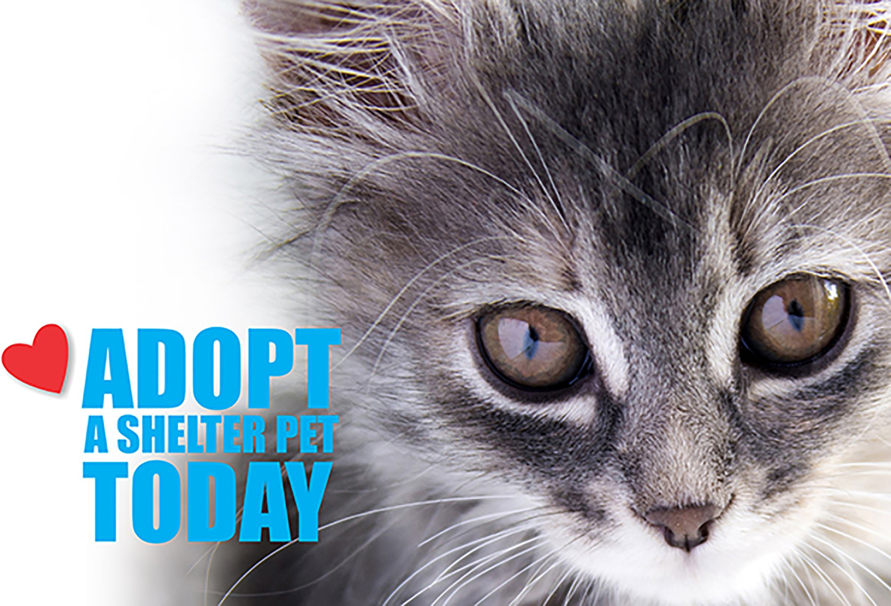

About Me
Meet me! My name is Taivan Tiisurenkhuu and I'm a web dseign and programming student. My goal is to become an indie game developer, however, I enjoy developing websites and tackling database design on MySQL. There are a lot for me to learn and explore and it's only been a little over half a year since I set my foot in CS field.
As you can tell I'm a huge video game fan! I game almost everyday and I don't limit myself to a single genre, I love playing games from triple-a developers to indie developers, horror to family-friendly, multiplayer and single-player. All games are worth playing, even the ones that have a have poor rating on Steam review or game critiques overlook them. I'm also a cat person. I have three cats and I love them very much! I don't know how I can live without them! But, it's not just cats but also dogs, birds, fishes; I love them all!
When I'm not gaming nor hanging out with cats, I usually love exploring and experimenting all kinds of stuff! So far, I enjoy cooking, baking, hiking, painting, appreciating art, experimenting music, etc. Most importantly, I enjoy people's company, from all walks of life. I believe you see yourself in the person you like hanging out with, and I think everyone, no matter who they are, have an inspiring story to tell.
Adopt a Cat!
By the way, if you love cats, adopting cats is the best way to get yourself a furry little friend! There are so many options to get yourself a pet cat, such as buying them from breeders or pet shop, maybe even craigslist. However, all those options does nothing but contribute to feral cat population.
Don't shop, Adopt! Every rescue cats from animal shelters come vaccinated, trained and either spayed or neutered. Which means no unexpected pregnancies, no more mate calls, no risk of infections and no behavoiral problems! Therefore, adoption is the best way to go!
If you are interested, click the image to the left and you will be redirected to a cat adoption search engine catered to your preferences and location!